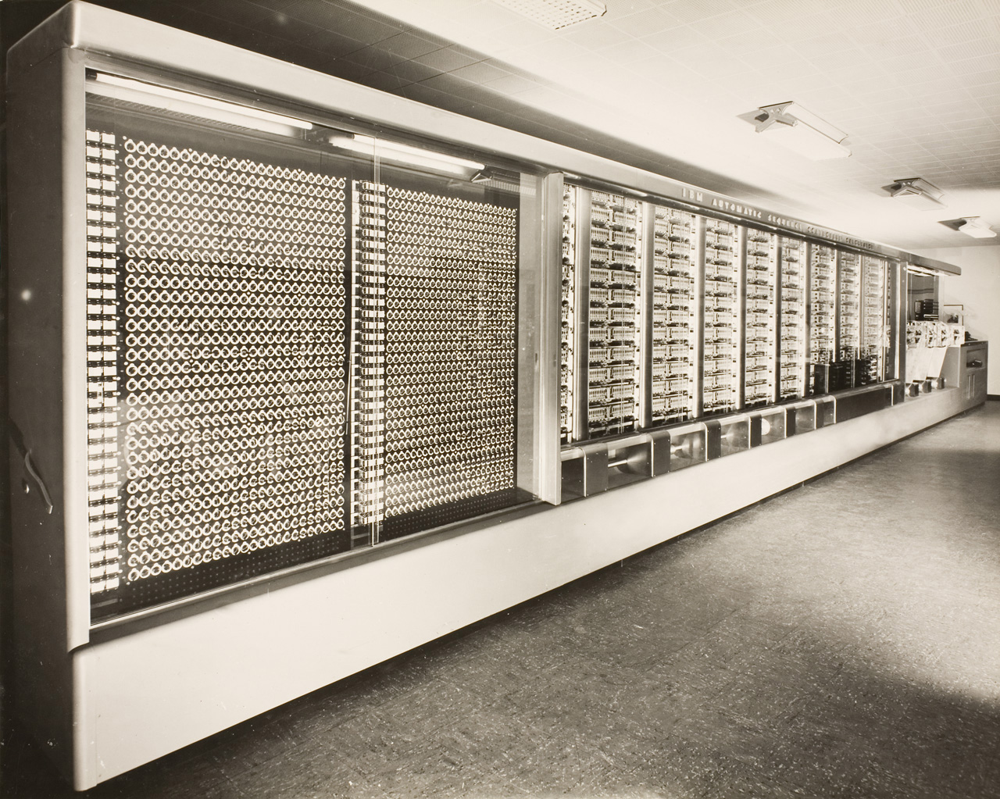
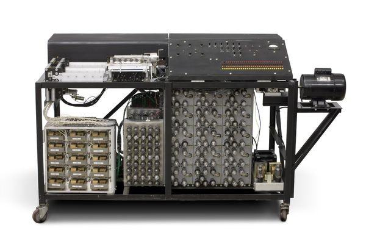

a) Mark I: The Harvard Mark I, or IBM Automatic Sequence Controlled Calculator (ASCC), was a general-purpose electromechanical computer used in the war effort during the last part of World War II.
One of the first programs to run on the Mark I was initiated on 29 March 1944 by John von Neumann. At that time, von Neumann was working on the Manhattan Project, and needed to determine whether implosion was a viable choice to detonate the atomic bomb that would be used a year later. The Mark I also computed and printed mathematical tables, which had been the initial goal of British inventor Charles Babbage for his "analytical engine" in 1837.
The Mark I was disassembled in 1959, but portions of it were displayed in the Science Center as part of the Harvard Collection of Historical Scientific Instruments until being moved to the new Science and Engineering Complex in Allston, Massachusetts in July 2021. Other sections of the original machine had much earlier been transferred to IBM and the Smithsonian Institution.
The Harvard Mark II, also known as the Aiken Relay Calculator, was an electromechanical computer built under the direction of Howard Aiken at Harvard University, completed in 1947. It was financed by the United States Navy and used for ballistic calculations at Naval Proving Ground Dahlgren. Howard Aiken and Grace Hopper worked together to build and program the Mark I. the Mark II was not a stored-program computer - it reads and instruction of the program one at a time from a tape and executed it like the Mark I. The Mark II ran some realistic test programs in july 1947. It was delivered to the US Navy Proving Ground at Dahlgren, Virgina in 1947 or 1948.

b) ABC (Atanasoof Beery Computer):The Atanasoff–Berry computer (ABC) was the first automatic electronic digital computer.[1] Limited by the technology of the day, and execution, the device has remained somewhat obscure. The ABC's priority is debated among historians of computer technology, because it was neither programmable, nor Turing-complete.Conventionally, the ABC would be considered the first electronic ALU (arithmetic logic unit) – which is integrated into every modern processor's design.Its unique contribution was to make computing faster by being the first to use vacuum tubes to do the arithmetic calculations. Prior to this, slower electro-mechanical methods were used by Konrad Zuse's Z1, and the simultaneously developed Harvard Mark I. The first electronic, programmable, digital machine, the Colossus computer from 1943 to 1945, used similar tube-based technology as ABC.
